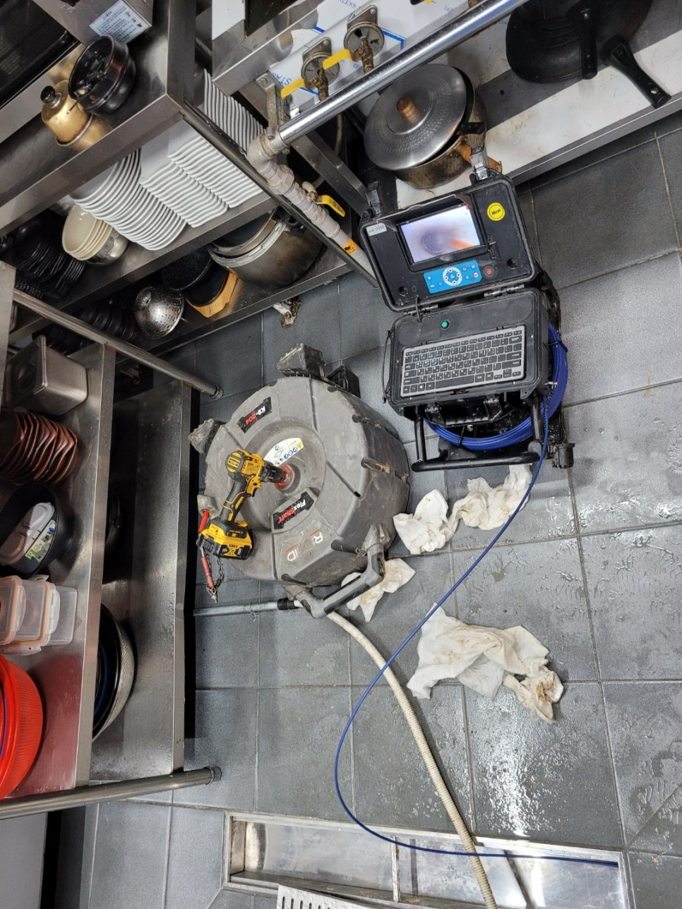
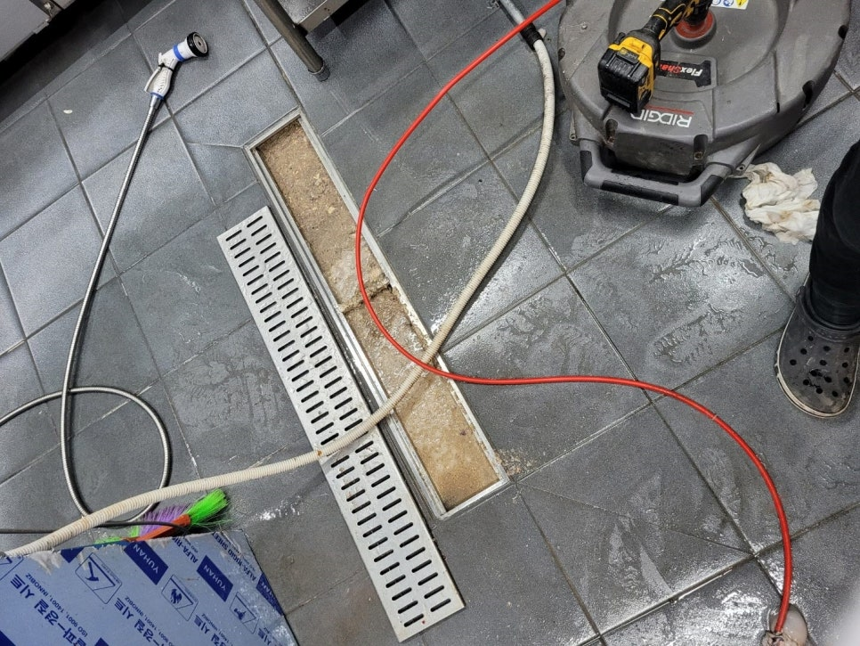

🏠 화성시 봉담하수구막힘 봉담읍하수구업체 문제점부터 확실한 파악!
화성 봉담 싱크대막힘 전문 시공 후기

📋 작업 개요
- 위치: 화성 봉담, 봉담, 화성
- 서비스 유형: 싱크대막힘, 하수구막힘, 배관막힘, 맨홀막힘, 역류해결, 고압세척
- 작업 일시: 2023. 2. 4. 23:48
- 업체명: 하수구수사대 (010-5615-2118)
🔍 문제 상황
안녕하세요 하수구수사대입니다 반갑습니다!
우리가 평소에 실내에서 사용하는 모든 물들은 배관을 통해서 외부로 배출이 되도록 되어 있습니다. 하지만 이렇게 배관이 막히게 되는 경우에는 여러 가지 설비에서 문제가 생기게 될 수 있는데요 우리가 실내에서 사용하고 있는 싱크대나 세면대 그리고 바닥 배수구등에서는 이러한 문제점들이 자주 발견이 될 수 있습니다.
이번에 방문한 현장은 화성시 봉담하수구막힘 봉담읍하수구업체로 의뢰해 준 곳으로 회사의 건물 내에서 심각한 막힘이 발생하고 있다는 문의를 받고 방문을 하게 되었습니다. 배관 막힘으로 인해서 회사 전체적으로 설비를 사용하기 어렵게 되다 보니 업무나 구내식당 운영이 원활하지 못하는 상황이었습니다.
🔎 원인 분석
💡 전문가 진단: 화성시 봉담하수구막힘 봉담읍하수구업체 현장에 도착을 하게 되면
화성시 봉담하수구막힘 봉담읍하수구업체 현장에 도착을 하게 되면
저희는 가장 먼저 배관의 막힘이 발생한 곳과 원인이 무엇인지를 파악하는 것입니다. 예상보다 건물의 규모가 큰 상황이었고 여러 사람들 공용으로 사용하는 공간들이 많다 보니 아무래도 하수구문제에 있어서는 취약할 수밖에 없는 상황이었습니다.
보통 이렇게 큰 건물들의 경우에는 정기적으로 전문 업체를 통해서 정기적으로 점검을 받는 것이 필요하다고 할 수 있습니다. 문제가 생기기 전에 대비를 하기 위해서 세척을 하고 관리를 해주게 되면 건물의 배관을 좀 더 쾌적하게 이용을 할 수 있습니다. 그리고 건물 주변에는 주차가 되어 있는 차량도 많이 있었기 때문에 주변에 최대한 지장을 주지 않고 작업을 하였습니다.
그래서 우선적으로는 작업이 위치를 선택하는 것부터 꼼꼼하게 확인을 하고 진행을 하였는데요 많은 사람들이 이용을 하고 있는 공간인 만큼 주변에도 피해가 가지 않도록 작업을 하는 것이 중요하다고 할 수 있습니다. 가장 우선적으로는 현장에서 피해가 발생하고 있는 화장실과 구내식당 그리고 싱크대를 점검하는 절차를 진행하였습니다.

🔧 작업 과정
하수구막힘으로 인해서 물이 내려가는 속도가 느려지게 되면서
배수구를 사용하는 것이 점점 더 어렵게 되고 저층의 일부 화장실 바닥에서는 역류까지 발생을 하고 있는 상황이라 빠른 해결이 필요한 상황이었습니다. 역류가 발생을 하게 되면 가장 큰 불편함은 바로 함께 올라오는 악취라고 할 수 있는데요 역류가 발생을 하게 되면 오랜 시간 동안 묵혀져 있던 이물질들이 물과 함께 섞여서 올라오기 때문에 지독한 악취가 함께 발생할 수 있습니다.
화성시 봉담하수구막힘 봉담읍하수구업체 본격적인 작업을 하기 위해서
외부에 위치해 있는 메인 배관을 확인해 보기로 하였는데요 대부분의 메인 배관의 경우는 맨홀이나 주차장 등을 통해서 외부로 연결이 되어 있는 경우가 많이 있습니다. 작업을 할 위치를 선정을 하는 것이 마냥 쉬운 일은 아니지만 여러 차례 탐지를 통해서 하수구막힘이 발생한 배관을 찾을 수 있었습니다.
원인이 되는 배관을 확인한 후에는 작업의 속도가 빨라지기 시작하였는데요 배관 내부의 상태를 파악하기 위해서 배관 내시경을 통해서 이물질의 위치를 확인하는 작업을 하였습니다. 배관은 길고 복잡하게 이어져있을 뿐만 아니라 외관상으로는 눈으로 어떻게 문제가 발생을 한 것인지 확인하기에는 어려움이 있기 때문에 꼭 배관 내시경을 통해서 확인을 하는 작업이 필요합니다.


✅ 작업 완료
내시경을 이용해서 내부의 상태를 확인해 보니
커다란 이물질 덩어리들이 뭉쳐있는 것이 보였습니다. 스프링기를 이용해서 배관 내부에 있는 이물질들을 분쇄를 해서 흡입하는 과정을 거쳤습니다. 배관에 손상이 가지 않도록 적절한 장비를 통해서 이물질들을 제거하는 작업을 하였습니다. 배관 내의 흐름이 좋아지고 이물질이 제거된 것을 확인하고 배관 작업을 마무리하였습니다.




⚠️ 주방 싱크대 배관 막힘 예방 수칙
- ✅ 기름기가 묻은 식기나 프라이팬은 설거지 전 키친타올로 반드시 기름때를 닦아내세요.
- ✅ 주기적으로 싱크대 개수대에 뜨거운 물을 가득 받아 한 번에 내려 배관 내부 기름을 씻어내세요.
- ✅ 배수구 거름망을 미세한 필터로 사용하시고 음식물 찌꺼기가 틈으로 새어 들지 않게 관리하세요.
- ✅ 베이킹소다와 식초를 뜨거운 물과 함께 일주일에 한 번씩 부어주면 배관 살균과 막힘 예방에 좋습니다.
💡 핵심 정리
- 확실한 장비 작업(내시경 점검 및 샤프트 스케일링)으로 원인을 뿌리 뽑습니다.
- 작업 후 1년 이내에 동일한 부위 재발 시 100% 무상 A/S 서비스를 보장합니다.
- 서울 · 경기 · 인천 전 지역에 24시간 언제든 긴급 출동할 수 있도록 항시 대기 중입니다.
❓ 자주 묻는 질문 (FAQ)
🚨 화성 봉담 싱크대막힘 문제로 고민이신가요?
정확한 원인 진단과 확실한 시공으로 재발 없는 해결을 약속드립니다.
24시간 긴급 출동 | 서울 · 경기 · 인천 전지역 | 1년 내 재발 시 무상 A/S